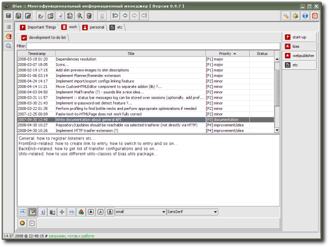

ToDoList - list of tasks to do with ability to sort them by priority, status etc. (set of priorities/statuses is configurable); besides of short task description, it's possible to add extended description, including images, links etc. (analogously to HTMLPage extension).
Extension is provided by R. Kasianenko, an author of Bias application.
Preview:
